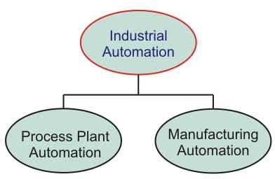
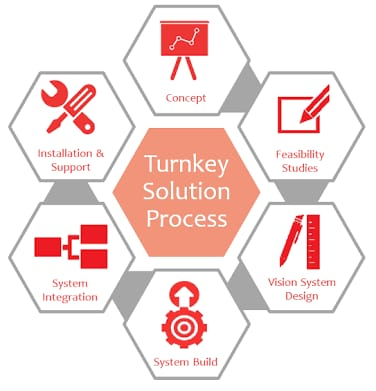

SPMs or Special Purpose Machines offer tremendous scope for high volume production at
low investment and at low cost of production when compared to CNC machines. SPM, Special
Purpose Machines is a high productivity machine, with specially designed tooling and
fixture, dedicated for mass producing the same component day in and day out. A judicious
combination of limit switches, sensors, logic controls, automatic job clamping etc is
the essence of a SPM. A well conceived Special Purpose Machine finds ways and means to
utilize the man and machine to the optimum.Our highly qualified team work on your given
specification and design most reliable and efficient machine for your process. We not
only committed to design the machine but we and our team will wholely responsible for
getting desired result for which machine is design. We have wide range of manufacturing
unit that led us to build quality machines in lower cost. Just you have to maintain
patience and trust on Startotech.
We specialize in providing designs for a wide array of applications, which include:
Specialized industrial machines
Processing and packaging equipment
Welding automation
Gantry pick and place systems
Automated test equipment
Tooling systems for casting and sheet metal
Specialized manufacturing equipment
Articulating arms
Part transfer chutess
Rapid prototyping
Our special purpose machine design services involve:
Conceptual design
Reverse engineering
Detailed drawing
Legacy CAD conversionss

Due to the rapid advances in technology, all industrial processing systems, factories,
machinery, test facilities, etc. turned from mechanization to automation. A
mechanization system needs human intervention to operate the manual operated machinery.
As new and efficient control technologies evolved, computerized automation control is
being driven by the need for high accuracy, quality, precision and performance of
industrial processes.
Automation is a step beyond the mechanization which makes use of high control capability
devices for efficient manufacturing or production processes.
What is Industrial Automation?
Industrial automation is the use of control devices such as PC/PLCs/PACs etc. to control
industrial processes and machinery by removing as much labor intervention as possible, and
replacing dangerous assembly operations with automated ones. Industrial automation is closely
linked to control engineering.Automation is a broad term applied to any mechanism that moves by
itself or is self dictated. The word ‘automation’ is derived from ancient Greek words of Auto
(means ‘self’) Matos (means ‘moving’). As compared with manual systems, automation systems
provide superior performance in terms of precision, power, and speed of operation.
In industrial automation control, a wide number of process variables such as temperature, flow,
pressure, distance, and liquid levels can be sensed simultaneously. All these variables are
acquired, processed and controlled by complex microprocessor systems or PC based data processing
controllers.
Industrial automation is the use of computer and machinery aided systems to operate the various
industrial operations in a well-controlled manner. Depends on the operations involved, the
industrial automation systems are majorly classified into two types, namely process plant
automation and manufacturing automation.
In process industries, the product results from many chemical processes based on some raw materials.
Some of the industries are pharmaceuticals, petrochemical, cement industry, paper industry, etc.
Thus the overall process plant is automated to produce the high quality, more productive,
high reliable control of the physical process variables.
Manufacturing Automation System:
The manufacturing industries make the product out of materials using machines/robotics.
Some of these manufacturing industries include textile and clothing, glass and ceramic,
food and beverages, paper making, etc. New trends in manufacturing systems have been
using automation systems at every stage such as material handling, machining,
assembling, inspection, and packaging. With the computer-aided control and industrial
robotic systems, manufacturing automation becomes very flexible and efficient.
Our expert team will help you to modify or say automate your process or manufacturing
process so that your productivity can increase and reduce labour cost.
In this way we will help you to compete in industrial market.
Startotech is Industrial Automation provider with expertise in Programmable Logic Controllers (PLC), Drives (VFD),
and Human Machine Interfaces (HMI) as well as Supervisory Control And Data Acquisition (SCADA) products.
We are vendor-neutral industrial engineering and automation solutions providers. Major brands of automation
products are supported by Startotech.
We provide unique and easy to do automation solution to our customers.
Our engineers sit together to get best solutions for your industrial problem and
then we provide reliable solutions with complete training support.
Whether you plan to modify, upgrade, troubleshoot your automation installation or you have a
completely new requirement, we can provide you with seamless support from product selection to basic
engineering, software development, commissioning and post commissioning support.
We work closely with our customers to arrive at an optimum migration solution based on their need
and budget. We provide complete range of Services for PLC, HMI, SCADA and Drives based Automation
Systems.
We also offer
Complete manual for solution
Training to your operator
Free maintenance service as per company rule
Circuit drawings
Startotech in collaboration with Industrial Fabrication Companies provide top class fabrication to our customers.
The company works with customers from the early stages of a project budgeting and design all the way to
manufacturing and shipping the final product. All our associates have highly trained welders with
extensive experience in metal fabrication. These companies are best in their works.
Why Startotech?
Since we have top class,highly qualified engineering team that always provide low budget
,best suited fabrication design to our customers. We have wide range of top class
fabricators and thus we have wide range and flexible price option.
In this we provide low budget and quality fabrition.

Are you looking for someone to do your industrial turnkey projects? Then you are on
right place. We are here with our engineering team and large numbers of contractors
ready to do help you. We know very well how to shape your project in best possible way
so that you will get maximum and high quality products. Our team will follow all the
standard procedure to achieve maximum efficiency. Since we have huge network of
contractors ,Startotech become able to provide low costing for projects to the
customers.
With ever-increasing efficiency and supply quality requirements. To meet these demands operators
need to introduce automation throughout the entire network.
Startotech from few months driving the development of advanced protection, supervision, control
and management products and systems for the complete power delivery process. As a forerunner
also in the development and manufacturing of primary equipment, Startotech with its partner is
able to create the best integration between the primary and secondary distribution to move
towards more efficient and reliable grids.
Investing in distribution grid automation improves operational efficiency and the quality of the
power network, safety for the personnel and extends the life cycle of earlier investments.
Scope
Automation throughout the entire network
Product benefits
Scalable solutions - from basic monitoring to advanced protection functionality
Most advanced earth-fault detection and protection on the market
Solutions available for both new and existing installations that meet the demands from all types
of power distribution grids
Ready-made solutions for integration of the secondary substation data to the SCADA or DMS system